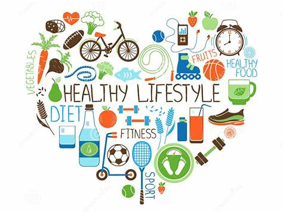

Kesehatan adalah Investasi Terbaik |
Apa itu hidup sehat?Hidup sehat adalah hidup yang bebas dari semua masalah rohani (mental) ataupun masalah jasmani (fisik). Hidup sehat bisa diartikan sebagai seseorang yang hidup sehat secara fisik dan psikis tanpa ada masalah kesehatan sedikitpun. Seakan sudah menjadi tren di zaman sekarang, hidup sehat menjadi sebuah hal penting yang harus dilakukan. Sebab memiliki tubuh yang sehat harus diawali dengan hidup sehat dan bersih sehingga tubuh kita akan terbebas dari penyakit. Mulai sekarang sudah saatnya kita untuk memulai hidup sehat. Manfaat Hidup SehatMengapa hidup sehat itu penting ? saat ini masih banyak orang yang belum sadar betapa pentingnya hidup sehat untuk kehidupan sehari-hari. Memiliki tubuh yang sehat tentu akan menunjang aktivitas kita sehari-hari. Bayangkan saja jika kita memiliki penyakit yang disebabkan oleh gaya hidup yang tidak sehat tentu akan merugikan diri sendiri dan juga keluarga. Sebab, aktivitas akan terganggu karena kita sakit bahkan akan banyak biaya yang keluar untuk pengobatan. Oleh sebab itu kita harus sudah sadar betapa pentingnya menjaga kesehatan. Berikut adalah beberapa manfaat dari hidup sehat:
Pentingnya gaya hidup sehat tidak dapat disepelekan karena hal ini tidak hanya bertujuan untuk mencegah penyakit, namun juga meningkatkan kualitas hidup dan memungkinkan kita mencapai potensi terbaik dalam segala bidang kehidupan. Dengan menerapkan prinsip hidup sehat dalam kehidupan kita sehari-hari, kita dapat menjalani hidup yang lebih sehat. |
 |
Kalori harianKonsumsi kalori harian yang dianjurkan dapat bervariasi tergantung pada beberapa faktor, termasuk usia, jenis kelamin, tingkat aktivitas fisik, tinggi badan, berat badan, dan tujuan kesehatan individu. Namun, secara umum, ada panduan umum yang disarankan oleh beberapa lembaga kesehatan seperti Badan Kesehatan Dunia (WHO) dan Lembaga Makanan dan Nutrisi Nasional di berbagai negara.Panduan umum untuk kebutuhan kalori harian adalah:
|
| No | Jenis Makanan | Kalori | Satuan Porsi | Kalori per Porsi | |
|---|---|---|---|---|---|
| Per 100g | Per 200g | ||||
| 1 | Nasi Putih | 130 | 260 | 1 piring | 260 |
| 2 | Roti Gandum | 250 | 500 | 2 iris | 300 |
| 3 | Ayam Panggang | 165 | 330 | 1 potong | 230 |
| 4 | Salmon | 206 | 412 | 1 fillet | 367 |
| 5 | Kentang Goreng | 365 | 730 | 1 mangkuk | 730 |
| Total Kalori | 2087 | ||||
Beritahu kami apa yang anda rasakan dan kami akan berikan solusinya, tuliskan keluhan yang anda rasakan pada kolom di bawah ini.